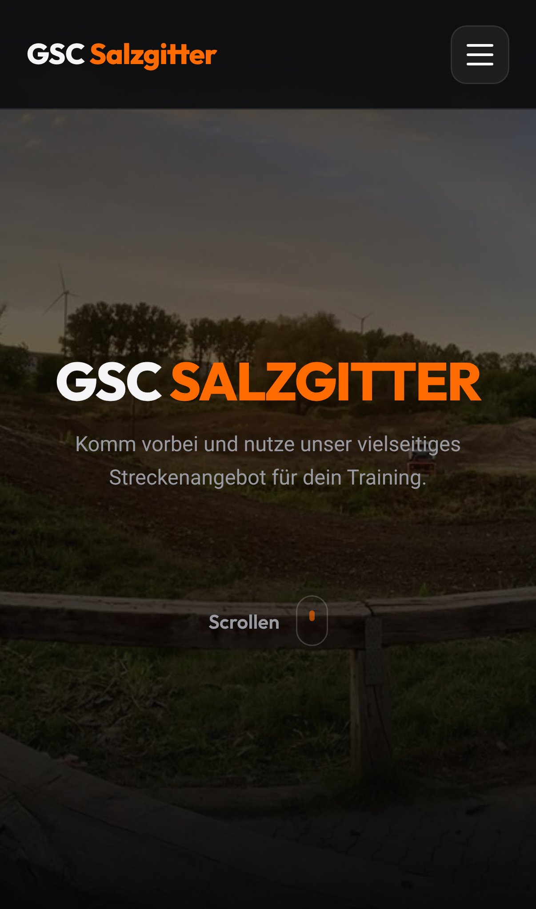
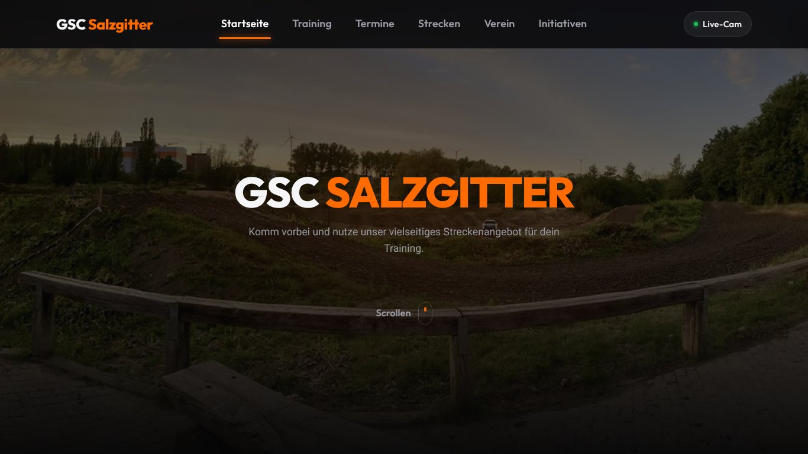
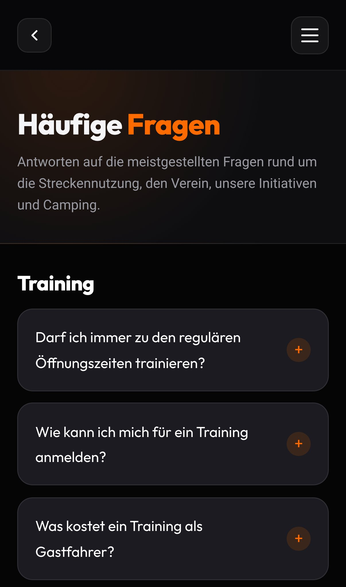
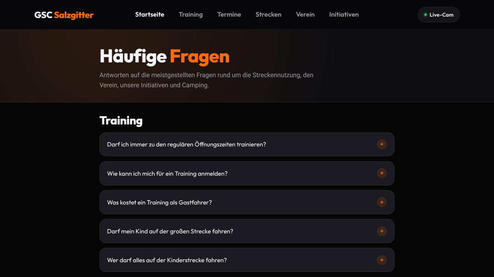

Jede Änderung an der Website wird hier als neuer Stand ganz oben eingetragen, mit Beschreibung und Screenshots für iPhone 17 und Laptop. Erst nach Freigabe im Chat geht eine Änderung live.
Im Abschnitt „Unsere Initiativen“ auf der Startseite ist das zweite Wort der Kartentitel jetzt orange: GSC School, Cross Kids, Girls Day. Das entspricht der Hervorhebung in allen anderen Überschriften der Website.
Das Screenshot-Skript kann jetzt gezielt einen Abschnitt aufnehmen (z. B. /#initiativen), damit Änderungen weiter unten auf einer Seite direkt sichtbar sind.
Warum?
Die Titel waren für eine Hervorhebung vorbereitet, wurden aber komplett weiß angezeigt. Dadurch wirkte der Abschnitt uneinheitlich zum Rest der Seite.
Es gibt nur noch dieses eine Änderungsprotokoll unter einem festen Link. Jede neue Änderung kommt als neuer Stand ganz oben dazu; ältere Stände bleiben darunter erhalten.
Oben auf der Seite steht eine Liste aller Stände mit Status, die zum jeweiligen Eintrag springt.
Die Vorlage für einen neuen Stand liegt in aenderungsprotokoll/VORLAGE-eintrag.html. Die bisherige Markdown-Übersicht entfällt, weil diese Seite selbst die Übersicht ist.
Warum?
Alle Änderungen sollen an einer Stelle nachvollziehbar sein, statt für jede Änderung eine neue Seite zu öffnen.
Das Änderungsprotokoll ist keine Markdown-Datei mehr, sondern eine Seite in Claude mit allen Screenshots, die nach jeder Änderung im Chat verlinkt wird.
Aufnahmen der ganzen Seite öffnen sich per Knopf „Ganze Seite“.
Warum?
Das Protokoll soll mit Screenshots direkt in Claude angesehen werden können.
Betroffene Seiten und Dateien
Webseiten: keine
CLAUDE.md, aenderungsprotokoll/
Screenshots
Keine Änderung an der Website, daher keine Screenshots.
Prüfhinweise
Die Seite ist privat. Andere Personen können sie erst öffnen, wenn sie über „Teilen“ freigegeben wird.
Neue Arbeitsregeln in CLAUDE.md: Jede Änderung wird zuerst in einem eigenen Branch committet und hier dokumentiert. Erst nach Freigabe wird sie nach main übernommen und geht live.
Screenshot-Skript scripts/screenshots.mjs: macht Aufnahmen der gebauten Website, jeweils den ersten Bildschirm nach dem Laden und die ganze Seite.
An Inhalt und Aussehen der Website hat sich nichts geändert.
Warum?
Jeder Push auf main wird sofort auf www.gsc-salzgitter.de veröffentlicht. Mit dem neuen Ablauf wird jede Änderung vorher geprüft und bewusst freigegeben.
Betroffene Seiten und Dateien
Webseiten: keine (Startseite und FAQ nur als Test des Screenshot-Skripts)
CLAUDE.md, scripts/screenshots.mjs
Screenshots
Startseite
/

iPhone 17

Laptop · 1366 × 768
FAQ
/faq

iPhone 17

Laptop · 1366 × 768
Prüfhinweise
Die Aufnahmen zeigen den aktuellen, unveränderten Stand der Website.
Die iPhone-Aufnahmen entstehen mit dem Geräteprofil „iPhone 17“ (402 px breit, 3-fache Pixeldichte) in Chromium, weil die Safari-Engine hier nicht verfügbar ist. Die Schrift kann auf einem echten iPhone minimal anders aussehen.
Nebenbefund, nicht Teil dieser Änderung: Auf der FAQ-Seite ist in der Navigation „Startseite“ als aktiv markiert.